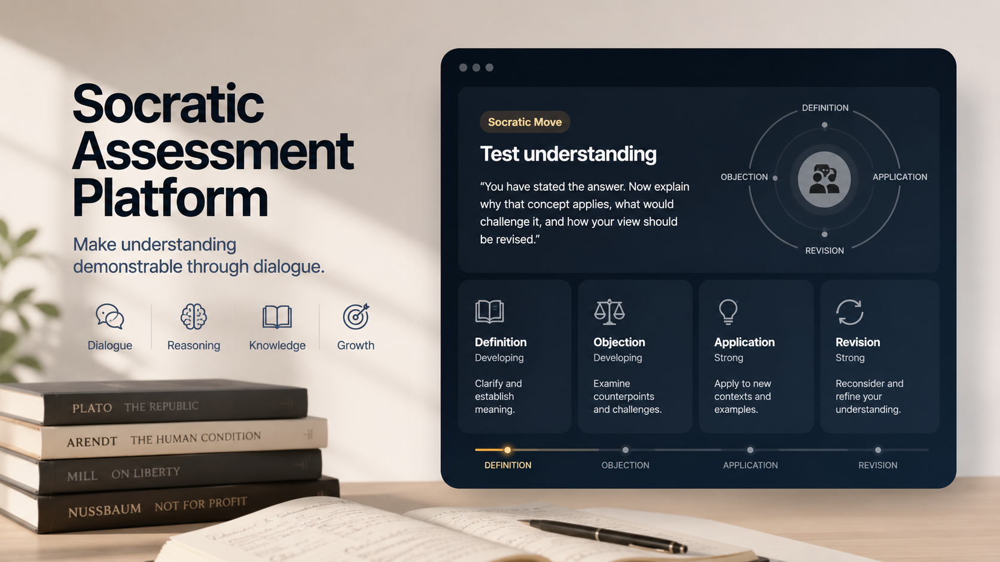

Philosophy • Artificial Intelligence • Education
Building tools for better thinking.
I am Benjamin A. Moss, MA, an Associate Professor of Philosophy, author, and independent software developer. My work connects Socratic pedagogy, critical thinking, educational technology, privacy, and human-centered AI with a growing portfolio of real software systems.

Current Work · August 2026
The projects at the center of my work now.
My portfolio has expanded beyond individual prototypes into connected platforms for faculty development, Socratic assessment, AI-assisted software engineering, secure credentials, and practical productivity.
Logos Professional
A multi-course professional-learning environment for faculty and educators, with evidence-based assessments, revision and resubmission, independent review, completion records, credentials, public verification, and analytics.
Noumena Engineering OS
A human-directed orchestration system that coordinates specialized AI agents for architecture, domain expertise, repository analysis, QA, product thinking, and integration review. The user remains the executive decision-maker and approves consequential moves.
Noumena Command Center
A macOS control surface for Engineering OS designed to turn multi-agent analysis into a practical development workflow: inspect projects, review agent findings, approve next moves, add executive instructions, and track implementation decisions.
Socratic Institutional Pilot
An institution-facing demonstration connecting structured course context, Socratic assessment, reasoning evidence, faculty review, and responsible AI governance while keeping educational authority with faculty.
Scholar · Educator · Builder
Philosophy is the connective tissue.
My work begins with questions about reasoning, judgment, agency, knowledge, and human flourishing. I teach applied ethics and critical thinking in higher education, write about AI and intellectual responsibility, and build software that translates those philosophical commitments into working systems.
The recurring design question is simple: how can intelligent systems increase human capacity without quietly displacing the judgment, responsibility, and reflective agency they are meant to support?
Portfolio
A connected ecosystem of research and software.
Logos Professional, Socratic Assessment, Learning Coach, Logos Learning Academy.
Noumena Engineering OS, Command Center, project agents, developer tooling.
Credential Vault, Logos AI, privacy-first utilities and local-first workflows.
MeetingScribe, FormPilot, ApplyWise, SpeedGrader, Critical Listening Assistant.
Educational AI
Tools that ask learners to demonstrate reasoning.
Research Prototype
Socratic Assessment Platform
Structured dialogue that makes definitions, reasons, applications, objections, revisions, and conceptual transfer visible for faculty review.
View project summaryLearning Platform
Logos Learning Academy
A learning environment centered on critical thinking, philosophy, reading, writing, inquiry, and reflective intellectual development.
View project summaryActive Development
Logos Professional
Professional learning for faculty with reviewable evidence, resubmission workflows, analytics, completion records, and verifiable credentials.
Visit platformLearning Tool
Critical Listening Assistant
AI-assisted interpretation that helps identify claims, evidence, assumptions, implications, and competing readings.
View project summaryActive Development
Learning Coach
A guided-learning system that scaffolds reasoning through questioning, reflection, practice, metacognition, and feedback rather than simply supplying answers.
Faculty Tool
SpeedGrader
An instructor-focused grading assistant designed to reduce repetitive work while preserving faculty oversight and academic judgment.
View project summaryEngineering AI & Productivity
From single assistants to coordinated systems.
Active Development
Noumena Engineering OS
A specialized multi-agent architecture for analyzing repositories, debating tradeoffs, proposing implementation moves, and escalating consequential choices for human approval.
macOS Application
Noumena Command Center
A native executive interface for steering Engineering OS, reviewing outputs, adding instructions, and turning analysis into actionable software changes.
Trust Infrastructure
Credential Vault
A secure credential and confidential recommendation-letter system exploring controlled access, watermarking, integrity verification, and applicant-safe sharing.
Working Utility
MeetingScribe
A browser-based meeting companion for capturing live captions and transforming transient conversations into usable notes and records.
Browser Automation
FormPilot
An intelligent form assistant aimed at understanding web forms, reducing repetitive entry, and supporting user-guided completion rather than opaque automation.
Private AI Workspace
Logos AI
A local-first AI workspace for projects, documents, voice interaction, private knowledge, and multiple reasoning providers.
View project summaryResearch Vision
Reasoning, judgment, agency, and humane technology.
Across my scholarship and software projects, I investigate how philosophy, education, and artificial intelligence can work together to cultivate stronger reasoning rather than automate it away.
Socratic Pedagogy
Dialogue, clarification, objection, revision, and transfer as evidence of understanding.
Human-Centered AI
Systems that augment judgment, reflection, responsibility, and human agency.
AI & Epistemology
How intelligent systems reshape knowledge, justification, trust, authorship, and intellectual dependence.
Philosophy of Technology
How technical systems structure inquiry, action, institutions, and human flourishing.
Books & Publications
Writing on critical thinking, AI, and philosophy education.
2026
Critical Thinking in the Age of AI
A book on reasoning, questioning, bias, misinformation, algorithmic influence, and the outsourcing of judgment.
View on AmazonCritical Thinking: Unleashing the Power of Reason
A framework for intellectual virtues, logical reasoning, cognitive bias, the Socratic Method, and reflective thought.
View on AmazonContact
Research, pilots, products, and collaboration.
For faculty pilots, educational research, AI product collaboration, software projects, or professional inquiries, connect through LinkedIn or GitHub.